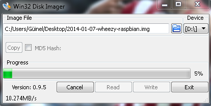
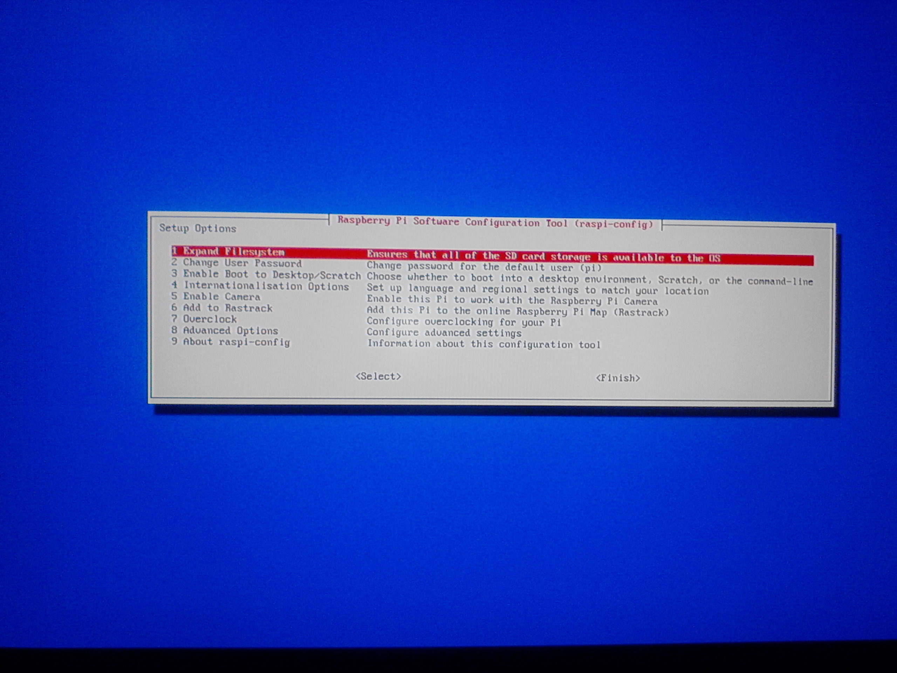
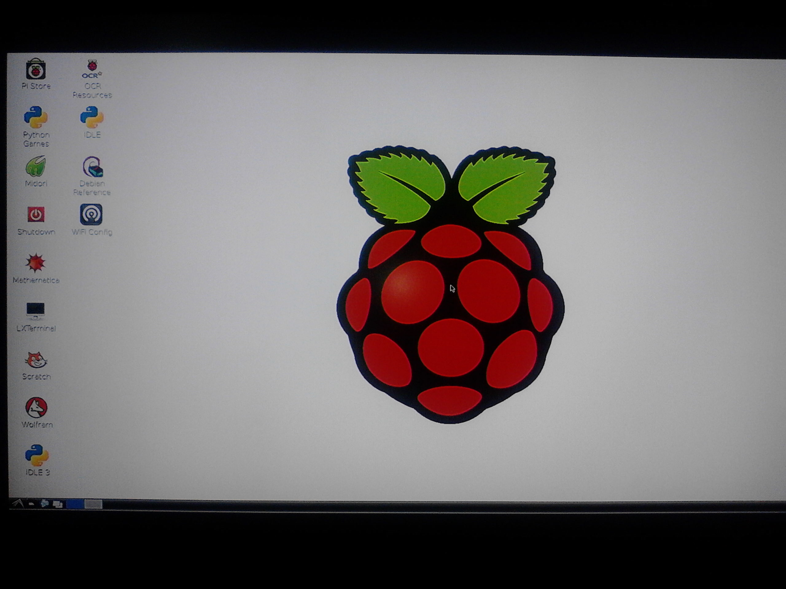
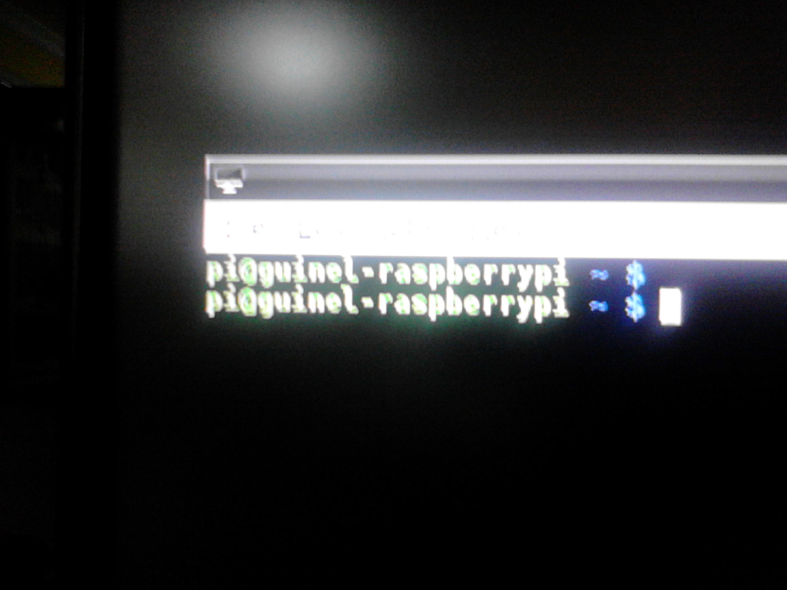
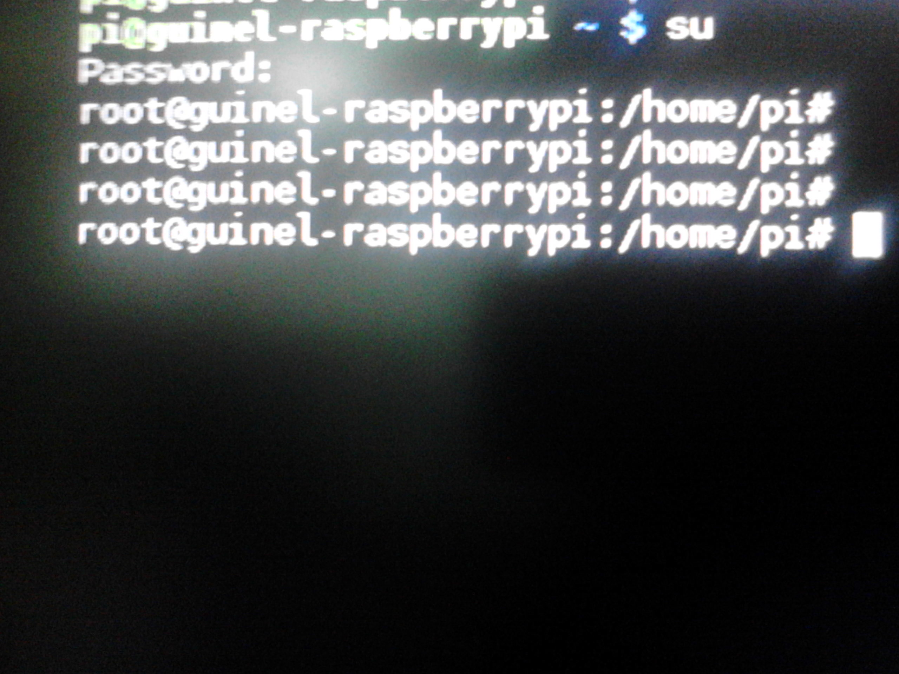
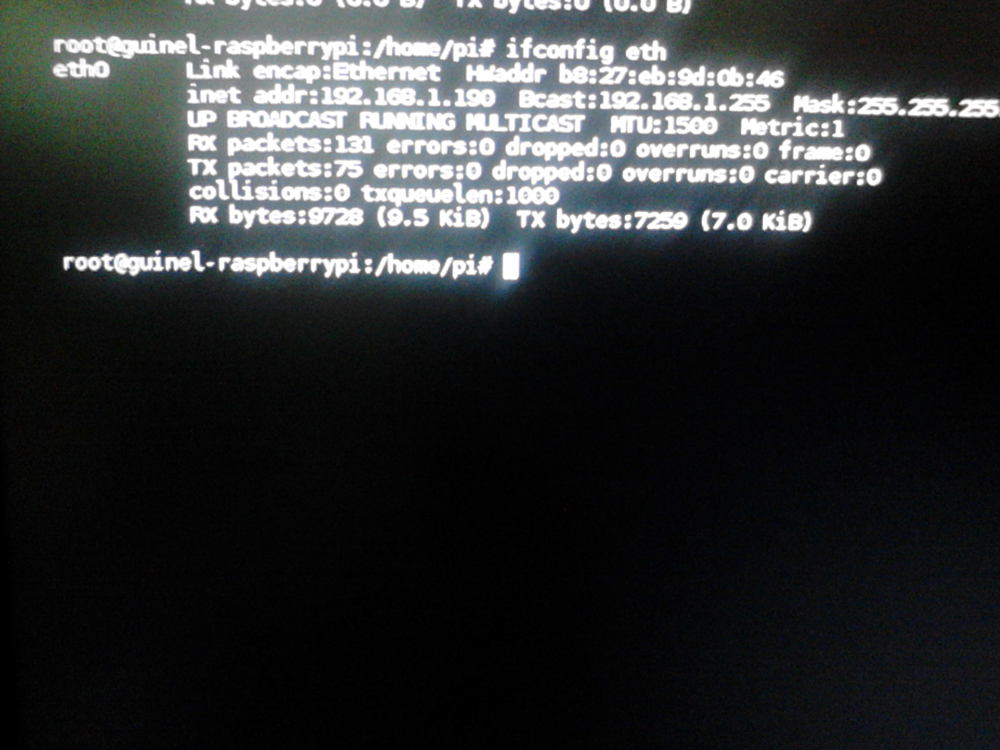

- Módulo: Fundamentos de Hadware.
- Título del trabajo Raspberry Pi.
- Componentes del grupo: Güinel Rodríguez García.
- Curso Académico: 2013/2014
- Fecha de entrega: 16 de Junio de 2014
-En primer lugar formateamos la tarjeta sd, donde vamos a grabar la iso de la Raspberry.
-Seguidamente con un programa grabamos la iso en la tarjeta sd.

-Iniciamos la Raspberry, y comenzara la instalación de la iso.

-Entramos al modo gráfico con el comando 'startx'.

-Seguidamente cambiamos los nombres.


-Por último miramos la MAC.

